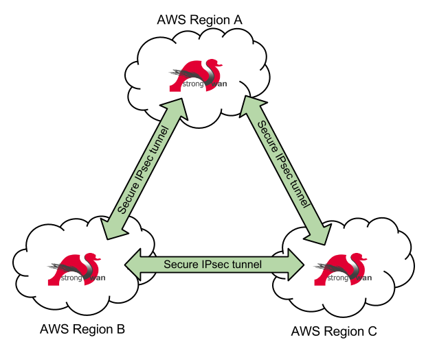
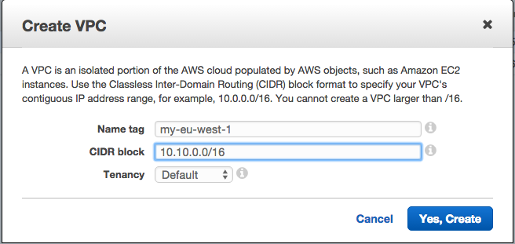
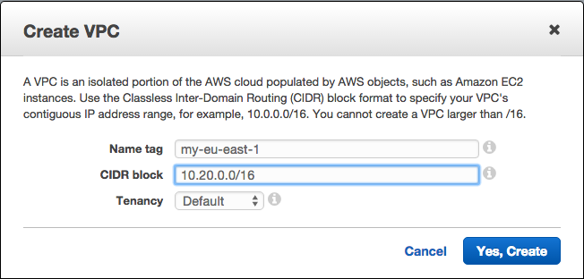
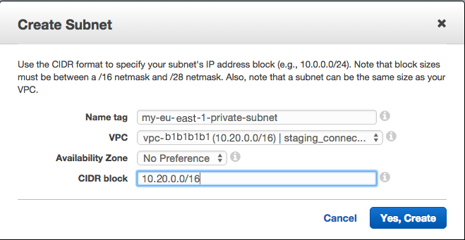
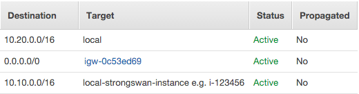
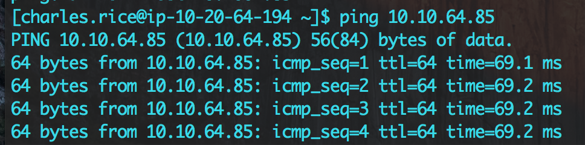

The title says it all - in this post we create a secure VPN (Virtual Private Network) connection between two AWS (Amazon Web Services) regions running a VPC (Virtual Private Cloud) setup. Using a VPC you are able to isolate your infrastructure and clamp down on security, but sometimes you want your hosted solutions to be distributed across multiple regions or share resources that are only needed once such as a registry or repo. Using this setup you can securely connect your VPCs using encrypted traffic - this will use the IPsec protocol via an open source solution, 'Strongswan'. This entire process of course can be automated, but we describe them manually here for your understanding. Below is a diagram showing what you will have in the end.
There are a couple things you will need for this to work:
First we will ensure that we have two regions each with VPCs and subnets to link together, and provision two basic EC2 instances in each to house the Strongswan connection. Open the VPC console, setup your VPC with a CIDR block and create a private subnet within that. Make sure that the two regions have different CIDR blocks, otherwise this will not work!
Figure 1. Example VPC creation for Region A Figure 2. Example VPC creation for Region B Figure 3. Example subnet creation for Region A Figure 4. Example subnet creation for Region BNow in each subnet create a single EC2 instance using any AMI image you wish - just note that the package names will differ slightly from what we use here as we use a Centos 7 AMI. We use the 't2.micro' instance size on one of our projects at Cake which should be more than fine up until you want to transport some high volume data between regions to suit your needs. Make sure you launch them with a Public IP assigned as this is how we will identify the end point from the other VPC, and later restrict the incoming traffic to the foreign Strongswan instance only. You may replace this with an EIP or ENI/EIP setup as we have for production if you wish.
Additionally you will want to enable packet forwarding on these instances, so that packets from other subnets can be forwarded on internally. Go to the EC2 console, right click on your instance, under 'Networking' and click the 'Source/Dest. Check' and disable it.
Now you must repeat these steps on each instance so that we have the software needed to introduce the connection configuration in the next section. SSH in and install the strongswan package, your favourite text editor and open up the ipsec.conf file.
sudo su
yum install -y strongswan vim
vim /etc/strongswan/ipsec.conf
Inside this file you will configure the connection for each side, and we provide some sensible defaults for the connection properties to start you off. The connection name can be anything you wish, and follow the convention of (L)eft is (L)ocal and (R)ight is (R)emote. Variables you need to change are in asterix square brackets, just remember to remove the asterix and brackets e.g. subnet=*[change me]* turns into subnet=10.10.0.0/16.
# Begin ipsec.conf
config setup
strictcrlpolicy=no
charondebug=all
conn %default
ikelifetime=60m
keylife=20m
rekeymargin=3m
keyingtries=1
keyexchange=ikev2
conn *[your connection name]*
authby=secret
auto=start
type=tunnel
left=*[local internal ip]*
leftid=*[local public ip]*
leftsubnet=*[local subnet e.g. 10.10.0.0/16]*
leftauth=psk
right=*[remote public ip]*
rightsubnet=*[remote subnet e.g. 10.20.0.0/16]*
rightauth=psk
ike=aes128-sha1-modp1024
esp=aes128-sha1-modp1024
# End ipsec.conf
Since we are using a psk to secure the connection we need to edit the ipsec.secrets file and tell both instances in advanced the secret key. The value of the PSK can be whatever you want, so long as they match on the instances you are installing.
# /etc/strongswan/ipsec.secrets
*[local public ip]* : PSK "change this to anything you want"
*[foreign public ip]* : PSK "change this to anything you want"
Finally you will need to enable ipv4 forwarding on your instance, and leave your SSH connection open as we will get back to it in a moment:
# /etc/sysctl.conf
net.ipv4.ip_forward=1
# Run this command after appending to the file as above:
sysctl -p
Before we can turn on the connection we just want to make sure that traffic destined for the foreign subnet is routed through the Strongswan instance, and also clamp down on the traffic permissions by using a Security Group. Return to the VPC management console and under 'Route Tables' we need to create one for your new VPC. Create one with any name, and then edit the routes. You will need to add a new route where the 'Destination' is the foreign subnet and the 'Target' is your strongswan instance.
In terms of Security Groups we must restrict access to your Strongswan instance so that only UDP traffic over ports 4500 and 500 are allowed from the foreign Public IP. Back to the EC2 management console, add a new Security Group for your VPC and add these three rules:
Now you're ready to fire up the connection between your VPCs! Return to the terminal and your SSH connections (you did take my advice and leave them open, right?) and start up the Strongswan service on both machines:
strongswan start
strongswan status
Congratulations! You've just configured a VPC to VPC VPN connection! Does it work? Let's give it a quick test and ping between some instances:
Excellent! We have communication between the two, now I can proceed to secure the connections between my VPCs and automate the entire process.
Just in case something went wrong, here are some handy hints and commands you can use to figure out what's going on and a quick explanation as to why.
Helpful commands:
strongswan statusall # Check status for all connections, more verbose output
strongswan rereadsecrets # Force Strongswan to check the pre-shared key
strongswan restart # If you make any changes, restart to ensure a clean connection attempt
One issue you may run into when setting up your security groups cross-region is that suddently the instances do not communicate as you expected. Don't panic, this is normal - what happens is once the packet is forwarded from VPC A and across the Strongswans, the Strongswan in VPC B appears to be the source of the packet to the receiving instance. Therefore if an instance needs to accept traffic on port 1234 from a remote VPC, don't allow traffic of the remote VPC but instead allow it from your local Strongswan. i.e. Ingress rule on port 1234 for local Strongswan.
In this tutorial we showed you how to create, configure and debug a VPN connection between two AWS VPC networks using Strongswan. Additionally there are some steps such as Elastic IPs and Elastic Network Interfaces that can be used for failure tolerance, and restriction of network traffic using Security Groups. If you wanted to extend this with more connections to other regions, simply add a new connection connection_name in your ipsec.conf. with Hopefully you found this useful for a hobby, a production application or purely for the interest in learning.